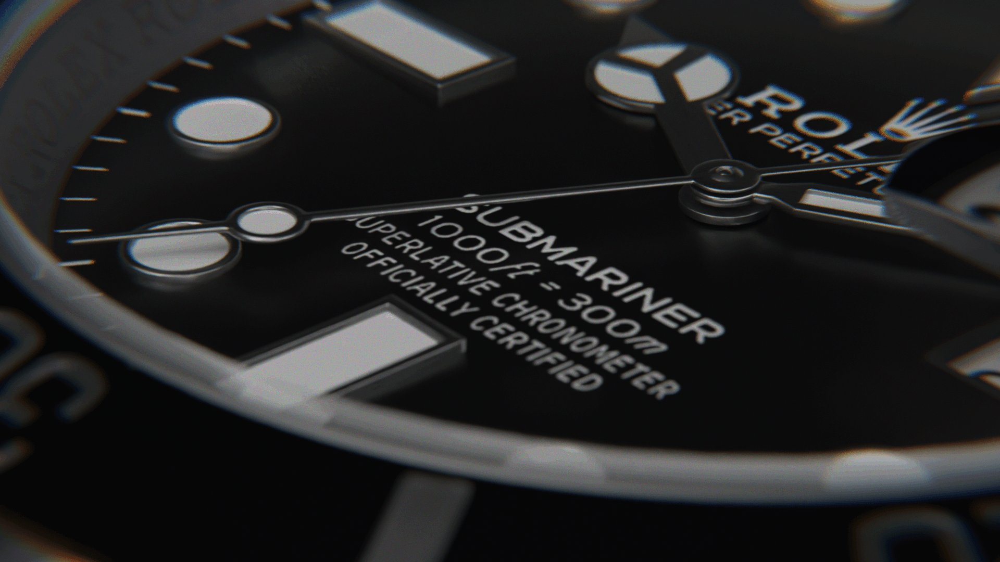
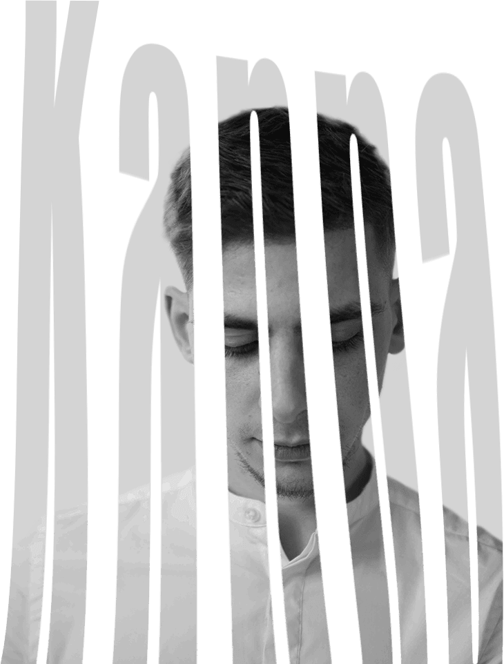

karel sissung
3D Artist
About
I am a passionate, creative person with a strong interest in new technologies, particularly in 3D printing and its application in the field of jewelry. The creation of unique and custom pieces, combining traditional craftsmanship with the advantages of modern technology characterizes my appeal to this sector.
After two years at Emersya working on real-time models for web configurators, I developed a solid foundation in modeling, texturing, lighting, and optimization. Curious and versatile, I appreciate both technical precision and the creative approach, and I enjoy exploring the diversity of fields where 3D is expressed.

Explore my projects
and my 3D expertise